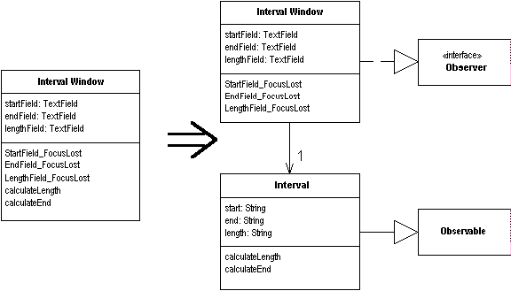

Duplicate Observed Data
You have domain data available only in a GUI control, and domain methods need access.
Copy the data to a domain object. Set up an observer to
synchronize the two pieces of data.

For more information see page
189
of Refactoring
| Refactoring Home | | Alphabetical List |